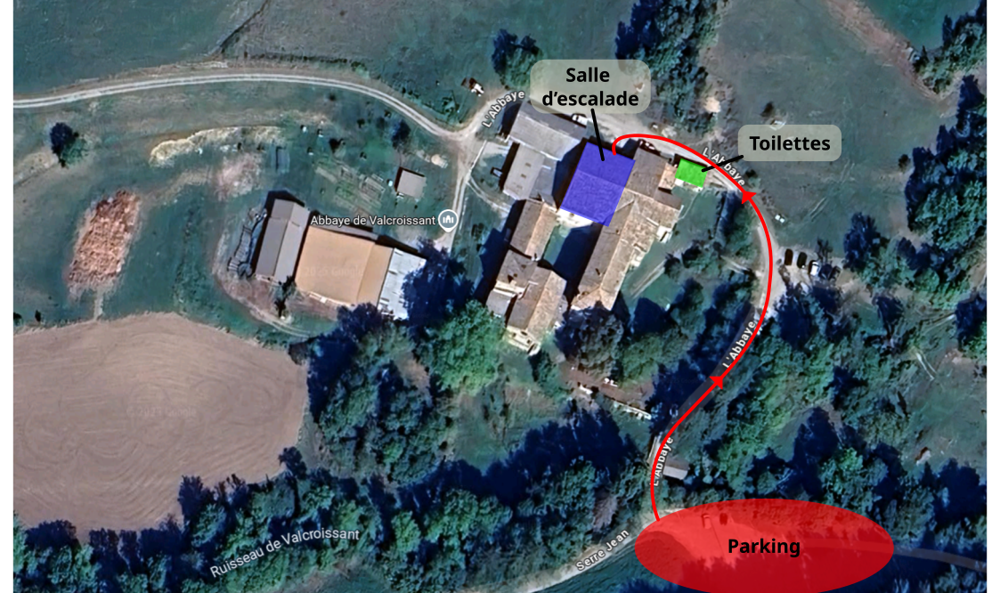

La salle de bloc du club est une petite salle associative ayant pour but de rendre la pratique de l'escalade abordable au plus de monde possible. Ce sont les bénévoles de l'association qui l'ouvrent et l'entretiennent. Les voies sont ouvertes par les BE assurant les cours ainsi que par certains membres du club.
Elle est utilisée pour les cours (enfants et adultes) à différents horaires de la semaine, ainsi que pour des séances de grimpe libre, 3 fois par semaine (voir horaires ci-dessous).
Lors des séances libres, la salle est accessible à tous les membres du club ayant plus de 10 ans.
Les moins de 10 ans doivent être élèves des cours, être accompagnés d'un adulte (qui n'a pas nécessairement à être membre du club s'il ne grimpe pas), avoir complété l'autorisation que vous trouverez ici ;
Les 10-14 ans doivent être accompagnés d’un adulte qui s’assurera du respect des règles de sécurité de la salle
Les 14-18 ans doivent avoir sur eux (ou laisser à la salle) une autorisation parentale que vous pouvez télécharger ici.
Quelques règles :
- pas de magnésie en poudre (problèmes de propreté et de « pollution de l'air » dans l'espace restreint de la salle)
- si possible, merci de désescalader des voies
- penser à faire la parade pour les autres grimpeurs
- ne pas rester sous les voies afin de diminuer les risques d'accident
- ne pas courir, jouer, faire des acrobaties, etc. sur les tapis…
Tarif :
L'adhésion au club et la licence FFCAM obligatoire pour accéder à la salle :
- adhésion au club : 10€ inclus lors du paiement de la licence FFCAM.
- adhésion FFCAM variable en fonction de l'âge, de l'adhésion d'autres membres de la famille. Détail des tarifs ici.
- Accès à la salle à l’année : 60€ (via HelloAsso)
Accès pour une séance (sur place) :
- 5€ pour les licenciés
- 8€ pour les non-licenciés (adhésion FFCAM à la journée)
Plan d'accès - Abbaye de Valcroissant
